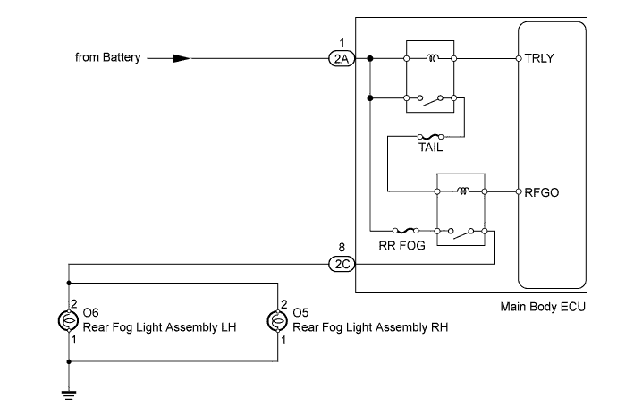
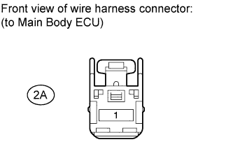
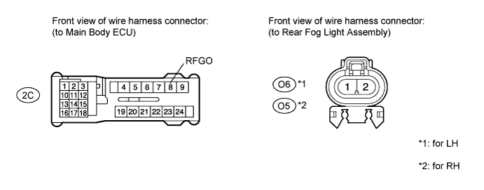

LIGHTING SYSTEM > Rear Fog Light Circuit |

| 1.PERFORM ACTIVE TEST USING INTELLIGENT TESTER |
Operate the intelligent tester according to the steps on the display and select "Active Test".
| Tester Display | Test Part | Control Range | Diagnostic Note |
| Rear Fog Light Relay | Rear fog light | ON or OFF | - |
|
| ||||
| OK | ||
| ||
| 2.INSPECT FUSE (RR FOG, TAIL) |
Remove the RR FOG fuse and TAIL fuse from the main body ECU.
Measure the resistance according to the value(s) in the table below.
| Tester Connection | Condition | Specified Condition |
| RR FOG fuse | Always | Below 1 Ω |
| TAIL fuse |
|
| ||||
| OK | |
| 3.CHECK HARNESS AND CONNECTOR (MAIN BODY ECU - BODY GROUND) |
 |
Disconnect the 2A ECU connector.
Measure the voltage according to the value(s) in the table below.
| Tester Connection | Condition | Specified Condition |
| 2A-1 - Body ground | Always | 11 to 14 V |
|
| ||||
| OK | |
| 4.CHECK HARNESS AND CONNECTOR (REAR FOG LIGHT ASSEMBLY - MAIN BODY ECU AND BODY GROUND) |
Disconnect the 2C ECU connector.

for LH:
Disconnect the O6 rear fog light connector.
Measure the resistance according to the value(s) in the table below.
| Tester Connection | Condition | Specified Condition |
| 2C-8 (RFGO) - O6-2 | Always | Below 1 Ω |
| O6-1 - Body ground | ||
| O6-2 - Body ground | Always | 10 kΩ or higher |
for RH:
Disconnect the O5 rear fog light connector.
Measure the resistance according to the value(s) in the table below.
| Tester Connection | Condition | Specified Condition |
| 2C-8 (RFGO) - O5-2 | Always | Below 1 Ω |
| O5-1 - Body ground | ||
| O5-2 - Body ground | Always | 10 kΩ or higher |
|
| ||||
| OK | ||
| ||